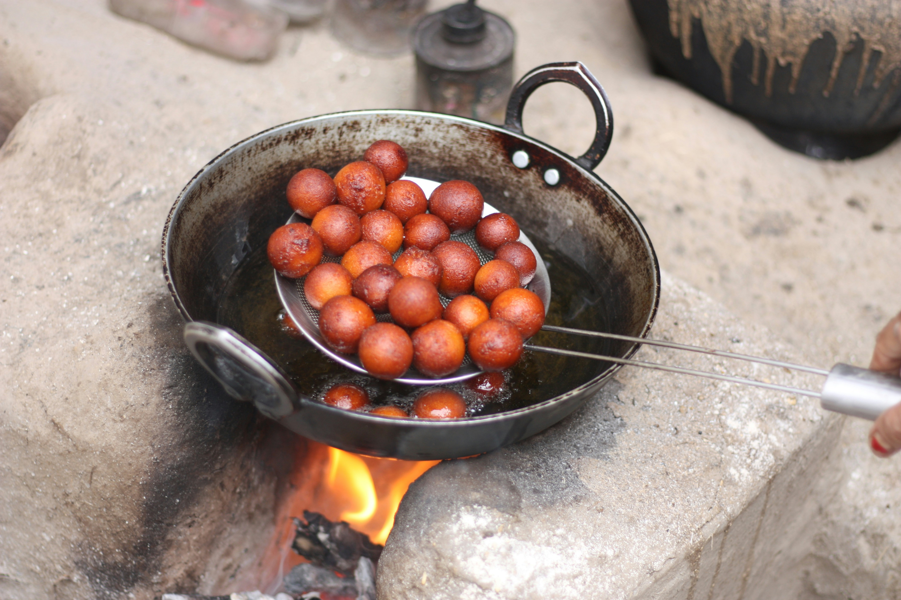

Chocolate Cake
Chocolate cake is a dessert characterized by its rich, chocolatey flavor and moist, often layered, texture. It can be made with melted chocolate, cocoa powder, or both, and is typically sweetened. The specific taste and texture can vary based on the recipe and ingredients used, such as the type of chocolate, addition of other flavors like vanilla or fudge, and the type of frosting or filling.

Recipe for chocolate cake
Gulab Jamun
Gulab jamun is a beloved Indian dessert consisting of fried balls of a dough made from milk solids and semolina, soaked with an aromatic syrup spiced with green cardamom, rose water, saffron, and more.
Recipe for gulab jamun